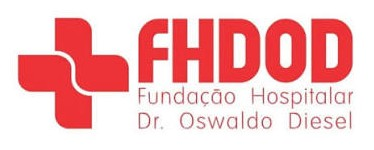

Experiência ao longo do tempo
Média da avaliação geral · escala de 1 a 5
7 dias atrásHoje

Experiência do paciente Sistema ativoAcompanhe a voz dos pacientes e identifique oportunidades de cuidado.
Média da avaliação geral · escala de 1 a 5
Percepção geral do atendimento
Elogios, reclamações e sugestões
Respostas no período selecionado
Imprima os códigos após publicar o site no endereço definitivo.
Os QR Codes usam o endereço atual deste site. Antes de imprimir, publique em um domínio acessível aos pacientes.
Indicadores coletivos da experiência dos pacientes
Indicadores agregados · sem dados pessoais · atualizado em tempo real neste dispositivo